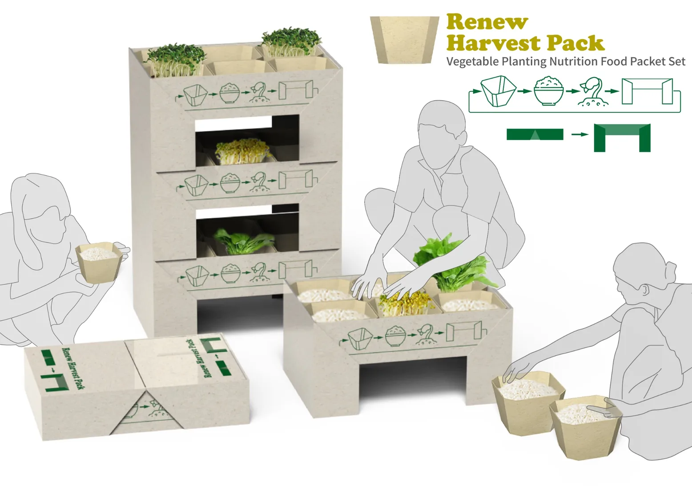

PROJECT 02 / SUSTAINABILITY
Renew Harvest Pack
不只送出一份糧食，也留下持續生長的可能。
再生糧援包裝系統概念與模型包裝設計循環設計社會創新
以糧食援助包結合後續種植體驗，讓包裝、飲食與植物再生建立循環關係。

PROJECT VISUAL / TSUKI DESIGN LAB
01 / DESIGN QUESTION / 問題洞察
我們看見的問題
在緊急糧食供應情境中，包裝往往在使用後被丟棄，也缺少後續參與與資源循環的可能。
02 / DESIGN CONCEPT / 設計概念
讓想法變得可參與
運用包材結構與種植流程，把短期的糧食支援延伸成可參與的再生行動。
03 / DESIGN PRACTICE / 設計過程
從概念到原型的實踐
針對盒體結構、植物生長流程與材料可行性進行設計探索與實體模型製作。
04 / PROJECT STATUS / 目前階段
持續探索與驗證
現階段屬設計概念與模型驗證，實際應用仍需材料、食品安全與場域測試。
KEEP EXPLORING